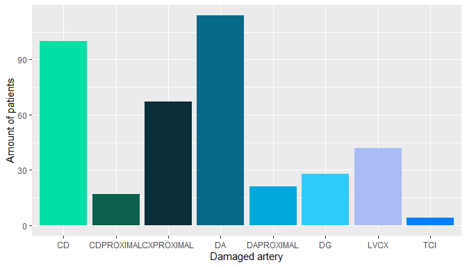

Introduction
The cardiologic service of Austral Hospital has given us a dataset that counts with 345 patients that suffer from some kind of coronary dysfunction. In order to develop an accurate analysis and prediction according to the requirements entrusted to fulfill, we started searching papers and articles written by specialists on the subject so that we could get in sintony with the language used in the dataset. Once we acquired a certain level of knowledge, we lead off with the analysis and development of queries with the purpose of creating links between the different types of data inside the dataset, and portray this information on graphs.
Data Analysis
In this section of the report, it is going to be shown some of the queries designed and the analysis making special focus on the impact of most of the factors concerning coronary issues.
Gender
According to the National Heart, Lung and Blood Institute, the risk of suffering some kind of coronary complication in men starts to increase at the age of 45, while in women this trend appears at the age of 55. This is because, after the menopause, womens production of estrogen, a hormone that modulates the vascular function, decreases considerably. Besides, as people get older, the arteries and vessels become narrower. As it can be seen in the graphs, the most common reason of admission in both, men over the age of 45 and women over the age of 55, is PROG CORONARIO (206 male patients and 27 female patients)
FEY
The FEY is a measurement expressed as a percentage of the amount of blood pushed out by the left ventricle with every heartbeat. The American Heart Association informs that a normal level of FEY is between 50 and 70. If the person has a fey under 50 and above 40 it’s on the borderline, which does not necessarily mean that the person is suffering from a heart dysfunction. However, the critical values are found under 40 (that is considered too low and a potential patient with cardiomyopathy) and over 70 (very high level, possibly the person suffers hypertrophic cardiomyopathy). Under the data given in the dataset, it can be seen that the mean of FEY equals to 57.14, which means that most of the patients included in the dataset have a normal level of FEY.

Angioplastied arteries
The “Revista Argentina de Cardiología” has analyzed over 623 patients, with an average age of 62 years old, in order to study the different damaged arteries that were angioplastied. According to their report, the most common arteries were: anterior descending artery or DA (49.3 %) , right coronary or CD (31.1 %), proximal circumflex or CX PROXIMAL (22.4 %) and lateral ventricle or LVX (5.1 %). Taking into consideration this study, we decided to do the same thing in our dataset but in a range of patients with an age between 50 and 70 years old. As it can be seen in the graph below, the cases found in our dataset follow the same logic from the study previously mentioned.

Interpretaton
This section of the report is specifically oriented to the interrelation of information belonging to the dataset and, under the grounds of the results achieved from the graphs, deduce and conclude certain aspects
Previous intervention with complications
Researchers from the Instituto de Cardiología y Cirugía Cardiovascular de La Habana (Cuba) did a study on 1264 patients from which 21% of them presented a coronary preoperative intervention. Given the results, they concluded that this is one of the main risk factors that lead to postoperative and transoperative complications. Based on this, we decided to analyze the amount of patients that had some kind of complication according to their previous clinical intervention. It resulted in 16 patients presenting complications: 4 were intervened by angioplasty previously, 1 by CRM and 11 by valvular.
Another aspect that was analyzed was the type of procedure done to each patient considering the type of diseases they suffer. Under the circumstances given in the dataset, it was designed a graph with the following results:

Diabetics are intervened mostly by angioplasty, although there is a significant number of surgeries, due to the fact that nowadays revascularization surgeries are becoming more common in this type of patients as a consequence of the number of complications in long term that angioplasty patients suffer. In hypertension cases there is a particularity: they are all intervened through surgery. A study from the Journal of the American College of Cardiology concluded that from 20 patients submitted by angioplasty a 20% suffered from aneurysm while the rest of the patients (16) that went to surgery did not have it. As these types of complications are commonly found in hypertense patients, angioplasty is chosen in order to reduce risks. Obese people most frequent procedure is as well surgery, even though that, in contrast with diabetes and hypertension, it is more balanced the use of the different procedures.
Number of injuries
In the medical field it is well known that as people grow older, the heart tends to enlarge slightly. Consequently, it develops thicker walls and the cavities enlarge as well. This increase is mainly caused by an increase of size of the cardiac muscle cells. Due to it, we decided to evaluate if there is any correlation between the number of injuries in patients older than 70 years old. After analyzing the data accordingly it was found that male patients did increase their number of injuries when they became older. This can be seen in the graphs by comparing the amount of percentage of an amount of lesions between each graph.
Surgery with Myocardial revascularization surgery
Coronary revascularization surgery by bypass is the most frequent surgery in patients with cardiovascular history thanks to its low cost and high effectiveness.. This explains why from all the patients from the dataset that went to surgery, around a 72% of them went to coronary revascularization surgery.
Correlation between pre existing deceases and complications
The graph obtained portrays the number of patients with one or more pre existing diseases that suffer from some kind of cardiovascular complication. It can be seen that the vast majority of cases suffer from diabetes (9 patients from which 1 also suffers from hypertension), then it follows hypertension (8 patients; 1 suffers as well from diabetes and another from obesity ), and finally obesity with 2 patients, from which one also has hypertension.

A caption
Predictor
The final section of this report will be specifically to the prediction of events concerning the types of procedures presented in the dataset.
After generating our prediction model, we tested it using the data of 113 patients. The model predicted successfully 92 out of the total 113 with a success rate of approximately 81,4%. We used this model because there is only a 7% of error for a false positive on surgery, which we think is the most critical way of failing the prediction, even though this means that the error of a false positive on angioplasty is going to be higher. This prevents patients from having a surgery, when they are required to have an angioplasty.

AUROC Curve
The AUROC curve represents the ratios between true angioplastied patients and false angioplastied patients. With this curve we can confirm that there is a high ratio of true angioplastied patients.